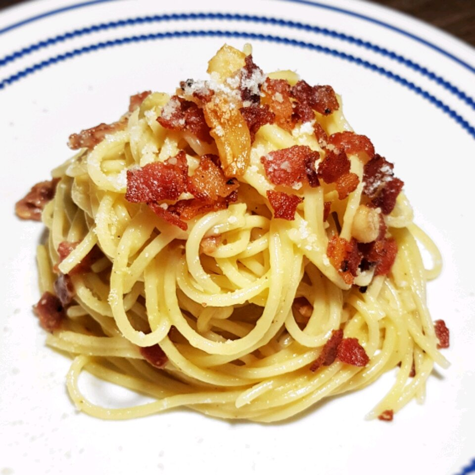

Authentic Carbonara Recipe

Authentic Spaghettie Carbonara past recipe made with simple incredients that creates a rich, flavorful dish.
Ingredients
- 1 (14 ounce) package spaghetti
- 5 ounces guanciale, cut into small cubes
- 3 egg yolks
- 1 egg
- 3/4 cup greated Pecorino-Romano cheese
- salt and freshly ground black pepper to taste
Steps
- Bring a large pot of lightly salted water to a boil. Cook spaghetti in the boiling water, stirring occasionally until tender yet firm to the bite, about 12 minutes. Drain.
- Heat a skillet over medium heat; cook and stir guanciale until crisp, 5 to 10 minutes.
- Whisk egg yolks and egg together in a bowl; add Pecorino-Romano cheese, salt, and pepper and whisk well. Stir in guanciale. Add spaghetti and toss until evenly coated.